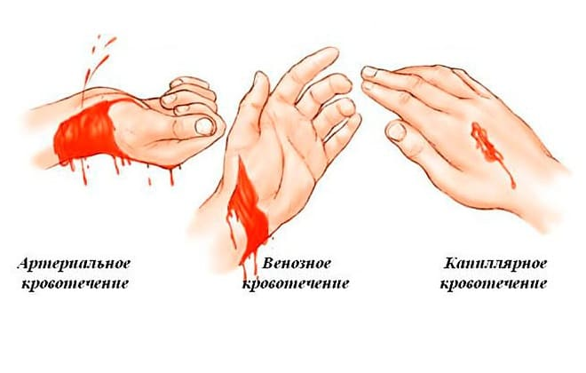
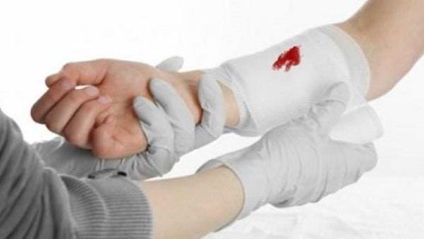
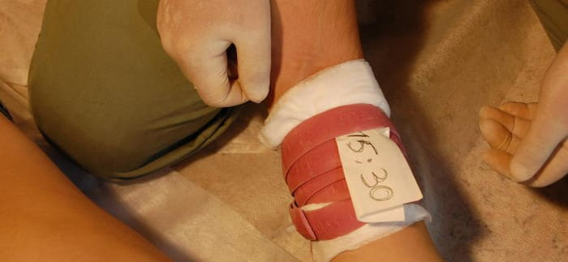
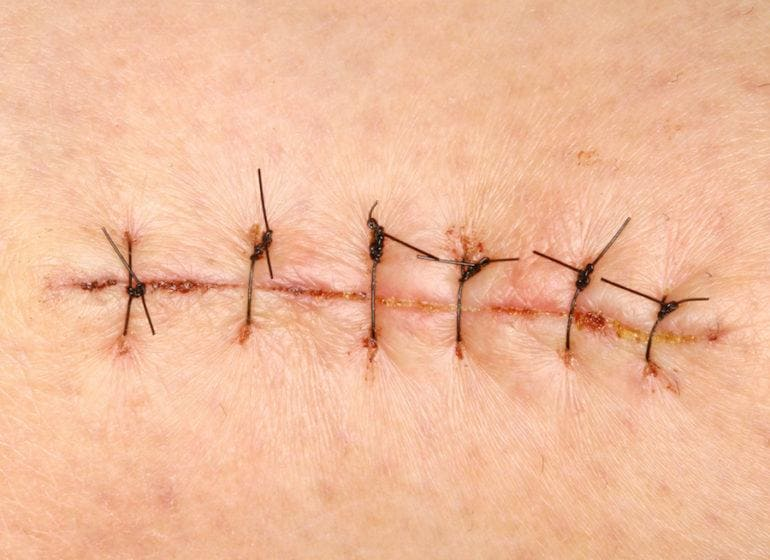

Будьте готовы к первым травмам с сильным кровотечением у своего ребенка. Хотя обычно бывают лишь небольшие царапины, из которых вытекает лишь несколько капель крови, и нужно лишь пожалеть ребенка и наклеить ему дежурный лейкопластырь, если вы научитесь распознавать и останавливать серьезные кровотечения, это может спасти вашему ребенку жизнь.

Надавите. Марлей или чистым носовым платком нажмите на место, откуда течет кровь, на две минуты. Затем, если есть возможность, подержите рану под струей холодной водопроводной воды и оцените серьезность пореза. Пронизанные кровеносными сосудами участки, такие как кожа головы, теряют много крови даже при крошечной ране от укола (которая быстро заживает, если применить надавливание, смазать мазью с антибиотиками и провести лечение временем). Количество теряемой крови зависит от типа поврежденного кровеносного сосуда. Если повреждена маленькая вена, может вытечь совсем немного крови, и кровотечение остановится через две-три минуты, если нажать на место пореза и/или подержать рану под струей холодной воды. Если была поранена артерия, кровь будет бить ключом; в этом случае для остановки кровотечения требуется как минимум 10 минут непрерывного надавливания. Если вы отнимете руку, чтобы посмотреть, начинайте отсчет заново. Затем наложите жгут еще на 20 минут, после чего осмотрите повреждение и обратитесь за медицинской помощью.

Наложите жгут. Если кровотечение представляет собой больше, чем вытекающую из вены тоненькую струйку, надавливайте не менее 10 минут. Вместо того чтобы убрать пропитавшуюся кровью марлю (при этом вы можете повредить сгусток крови (тромб), вследствие чего кровотечение откроется вновь), наложите поверх первого новый кусок марли. Не ослабляя нажатия на рану, обмотайте марлю лентой для обеспечения постоянного давления
.
Успокойте ребенка. Взволнованный ребенок еще быстрее качает кровь по сосудам, и из раны выходит еще больше крови. Оставайтесь спокойными; вы должны взять ситуацию и себя в руки.
Придайте телу ребенка правильное положение. Уложите ребенка горизонтально и поднимите место пореза выше уровня сердца, например, подняв руку.
Обратитесь за помощью. Позвоните врачу, чтобы получить дальнейшие советы, или вызовите скорую, особенно если вам не удается остановить кровотечение.
Хотя для ребенка нет такой вещи, как пустяковое кровотечение, у большинства малышей случаются лишь маленькие кровотечения, с которыми можно легко справиться дома.
Оставайтесь хладнокровными. Двухлетние дети впадают в ужас при виде крови и при самой мысли о повреждении в своем теле. Если они увидят на вашем лице панику, это напугает их еще больше.
Промойте рану. Подержите место пореза (например, руку) под струей холодной воды три-четыре минуты, спокойно приговаривая: «Все будет хорошо» (а не «Все хорошо»). (Примечание: свежая кровь легче смывается с кожи и волос холодной водой, чем теплой.) И не забудьте о лейкопластыре. Даже если кровотечение остановилось, эта временная заплатка убедит ребенка в том, что его поломку починили.
Ежедневный уход. Если в первое время ежедневно промывать место пореза под струей воды, вода смоет остатки запекшейся крови, микроорганизмы и омертвевшие ткани, которые повышают риск возникновения воспалительного процесса. Насухо промокайте чистым бинтом. В зависимости от местоположения и типа раны ваш врач может посоветовать вам осторожно счищать образующуюся корочку перекисью водорода, наносимой дважды в день ватной палочкой. Смазывайте мазью с антибиотиками и закрывайте рану в соответствии с инструкциями вашего врача.
Требует ли рана наложения шва? Швы ускоряют заживление и сводят к минимуму риск возникновения воспалительного процесса и образования рубцов. Если края раны расходятся или вы можете заглянуть под кожный лоскут, требуется наложение шва.
Как уже говорилось выше, повреждения кожи головы сопровождаются обильным кровотечением, но после того как кровь остановится, вы будете удивлены крошечными размерами раны. Те же самые кровеносные сосуды, которые имеются здесь в изобилии и вызвали панику, быстро заживляют рану, и раны на голове редко воспаляются. Эти соображения и отсутствие беспокойства косметического характера отменяют необходимость наложения шва на маленькую рану на голове.

Еще одним местом, щедро выпускающим кровь, но при этом быстро заживающим самостоятельно, является богато пронизанная кровеносными сосудами перемычка, соединяющая верхнюю десну с губой, известная как уздечка. Она, как правило, обязательно повреждается и кровоточит после падения на лицо. Уздечку редко требуется сшивать, и она быстро заживает, стоит лишь прижать к ней на некоторое время смоченный в холодной воде бинт или дать ребенку пососать мороженый леденец. То же самое можно сказать о языке.
Марта, Уильям, Роберт, Джеймс Сирс"Ваш малыш от рождения до двух лет"